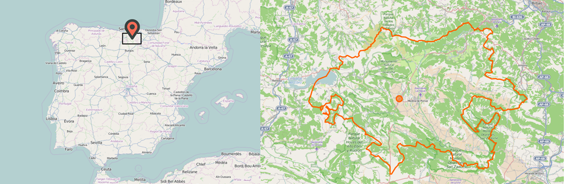

OpenStreetMaps Data Wrangling
This project has been developed in order to pursue the Data Analyst Nanodegree offered by Udacity. Specifically, the project aims to use the knowledges acquired in the second course of this Nanodegree: Data Wrangling with MongoDB.
The Project Report about the data wrangling can be found here.
1. Introduction
The goal of this project is to choose any area of the world in https://www.openstreetmap.org and use data munging techniques, such as assessing the quality of the data for validity, accuracy, completeness, consistency and uniformity, to clean the OpenStreetMap data for a part of the world, converting it from XML to JSON format, importing the clean file into a MongoDB database and run some queries against it.
2. Obtaining the data
To obtain the data I have made a query to http://overpass-api.de/query_form.html after searching for Las Merindades, which is the region where my hometown, Medina de Pomar, belongs to. The query is the following:
(node(42.5966, -4.2339, 43.2832, -2.7370);<;);out meta;
And the resulting osm (or xml) data is stored on /data/file.osm, which is a 355,3 MB file (that can be downloaded also here). A sample of that file (created with the sample.py script) can be accessed here.

3. Structure of the OSM file
In the OSM XML page we can see the format of the XML document, which is basically a list of instances of their data primitives or Elements: nodes, ways and relations.
3.1 Elements
Those Elements have several common attributes: id (identify the element within a type -node, way or relation-), user (display name of the user), uid (numeric user id), timestamp (time of the last modification), visible (whether the object is deleted or not in the database), version (edit version of the object) and changeset (the changeset in which the object was created or updated).
Furthermore, each one of those categories has its own attributes:
- Nodes: lat (latitude coordinates in degrees), lon (longitude coordinates in degrees) and a bunch of different tags (a set of key/value pairs).
- Ways: an ordered list of Nodes (as XML elements with nd tag and an attribute named ref with a reference to the node id). Normally it has also at least one tag.
- Relations: one or more tags and also an ordered list of one or more nodes, ways and relations as members.
So our interest will be on the first two kind of Elements: nodes and ways. The majority of the common attributes make a reference to the creation process of that element. So in our document-oriented model we could aggregate those values within an attribute of our document. Also, due to the fact that there is going to be a unique collection for all documents, we should differentiate between nodes and ways.
{
...
'type': 'node OR way',
'id': 'some_id',
'visible': 'true OR false',
'created': {
'user': 'some_user',
'uid': 'some_uid',
'timestamp': 'some_timestamp',
'version': 'some_version',
'changeset': 'some_changeset'
}
}In the case of nodes, we could add a position attribute. MongoDB offers a number of indexes and query mechanisms to handle geospatial information, that allows us to create 2d Geospatial Indexes if we storage the GPS data with the following format:
'pos' : [ longitude, latitude ]NOTE: the name of the attribute could be whatever we want, pos is an option but it could be loc or position. In our case the name of this attribute will be pos (for no specific reason).
In the case of ways, we could create an attribute for storing all the nd values within an array:
From
<way ...>
<nd ref='ref1'/>
<nd ref='ref2'/>
...
</way>to
{
...
'node_refs': [ 'ref1', 'ref2', ... ]
}3.2 Tags
As we have seen before, a tag is a key/value pair that describes a specific feature of a data Element. In our transformation to JSON-like documents we should include all these tags as attributes. However, there are some of this tags whose key can be modified to include a namespace (a prefix, infix or suffix using a colon : as separator). One example of these namespaces could be the tags that contain part of an address, which have a prefix addr. In these cases we could create an attribute in our document that aggregate all different characteristics for a given prefix, which in the case of an address could be:
From
<node ...>
...
<tag k='addr:street' v='some_street'/>
<tag k='addr:postcode' v='some_postcode'/>
<tag k='addr:housenumber' v='some_housenumber'/>
</node>to
{
'type': 'node',
...
'addr': {
'street': 'some_street',
'postcode': 'some_postcode',
'housenumber': 'some_housenumber'
}
}4. Auditing the data
We are going to assume that all the attributes, except for the tags, are going to be correct. That is, the common attributes, the GPS positions for the nodes and the list of nodes for the ways are not going to be sanity checked.
As we have seen before, each tag has a key/value pair referring a specific characteristic of that node or way. We are going to audit first the keys, and then we will continue with the values.
4.1 Analyzing the different keys
4.1.1 Structure (applying regular expressions)
This analysis has been performed with different functions within the audit_keys_basic.py script.
If we take a look at the tags presented in the document, classifying their key depending on the kind of Element (node or way) and also the structure (if all the characters are correct or if it has a namespace, for example) we get the following structure:
{'node': {'lower': 89359,
'lower_colon': 53673,
'lower_colon2': 171,
'other': 344,
'problemchars': 0},
'way': {'lower': 206635,
'lower_colon': 34756,
'lower_colon2': 250,
'other': 22,
'problemchars': 1}}In this case we have made a count of the different categories: lower represents all the keys that are composed by lower case characters and/or the underscore (ex. admin_level), lower_colon represents all the keys that have the same structure as the previous but that also includes one namespace (ex. addr:city), lower_colon2 represents all the keys that have the same structure as lower but that includes two namespaces (ex. maxspeed:lanes:forward), problemchars represents all the values with one or more problematic characters (other than a-z or _) and finally other represents all the other cases.
As we said before, we can nest the keys with namespaces within attributes of our JSON-like document. So the tags in the categories lower_colon and lower_colon2 could be treated that way. In the case of the lower category, we can add directly the tags as attributes to our document.
Regarding the other category and the problematic characters, we should check what kind of tags we have. Following the last procedure, we are going to count how many different keys we have for those tags:
{'node': {'lower': { ... },
'lower_colon': { ... },
'lower_colon2': { ... },
'probemchars': {},
'other': {'CODIGO': 3,
'FIXME': 2,
'fuel:GTL_diesel': 45,
'fuel:HGV_diesel': 2,
'fuel:diesel_B': 25,
'fuel:diesel_C': 1,
'fuel:octane_91': 1,
'fuel:octane_95': 70,
'fuel:octane_98': 48,
'ideewfs:alturaElipsoidal': 18,
'ideewfs:factorEscala': 18,
'ideewfs:fechaCompensacion': 18,
'ideewfs:husoUTM': 18,
'ideewfs:numeroROI': 18,
'ideewfs:xUTM': 18,
'ideewfs:yUTM': 18,
'naptan:CommonName': 1,
'naptan:Indicator': 1,
'naptan:Street': 1,
'ref:RRG': 18}},
'way': {'lower': { ... },
'lower_colon': { ... },
'lower_colon2': { ... },
'probemchars': {u'Torre\xf3n del castillo de los Salazar': 1},
'other': {'FIXME': 1,
'N': 1,
'fuel:GTL_diesel': 2,
'fuel:diesel_B': 1,
'fuel:octane_95': 9,
'fuel:octane_98': 8}}}As we can see, most of the cases have been classified into this category because they have capital letters or even numbers. The OSM wiki specifies that both the key and value are free format text fields, however it is not a common practice to include such kind of characters on the key. We are going to analyze each one of those values to understand what they mean.
The FIXME key "allows contributors to mark objects and places that need further attention”. The CODIGO key does not seem to have any meaning, we will try to understand what it means later. The N key seems to be some kind of error, we will try to discover its meaning later too. The naptan namespace references the NaPTAN and NPTG datasets for bus stops and places which the UK Department for Transport and Traveline have offered to make available to OpenStreetMap project, so given that this region belongs to Spain, I suppose these values should not be there. The ideewfs key refers to the Web Feature Services (WFS) of the Infraestructura de Datos Espaciales de España (IDEE - Spatial Data Infrastructure of Spain), which is a web service to consult geographic features of Spain, so this data refers to data that belongs to the Red Geodésica Nacional (RGN - National Geodetic Network). The ref key is used for reference numbers or codes (as we have seen for referencing the nodes within a way), which in this case has the RRG namespace, that is referenced on the RGN (as the ideewfs). Nevertheless, I have not found any reference about what it means, so we will treat them the same way as the others. The penultimate element is the fuel key, which describes which fuels are available at amenity=fuel sites. Finally we have a value within the problemchars category, u'Torre\xf3n del castillo de los Salazar' that clearly should not be there because it refers to a name of some kind of castle-like building, so it has to be within the value of a historic:castle key (for example).
Summarizing, we can proceed to storage as attributes in our document the keys FIXME (because we do not know what that user was referring to) and fuel. In the case of ideewfs and ref:RRG, it turns out that these nodes has a tag with a source key pointing to the IDEE, so both reference to the same source. However, we are not sure about the meaning of those tags, so we will need further analysis of the keys. The case CODIGO refers to a some specific trees that are protected by the Basque Government and have a unique identifier that can be consulted here. They are under the Primary Feature natural so we can treat these values as other attributes within our object.
In the castle-case, effectively we have the following wrong tag: <tag k="Torreón del castillo de los Salazar" v="water" />. We do not know what the user wanted to say with the water value, but it is clear that the key in this case should be moved to a tag with a name key: <tag k="name" v="Torreón del castillo de los Salazar" />. The N key refers to a street name as the tag states: <tag k="N" v="Calle Real" />, so we should change it for <tag k="name" v="Calle Real" />.
4.1.2 Namespaces and aggregating attributes
This analysis has been performed with different functions within the audit_keys_namespaces.py script.
As we stated before, the tags that belong to a namespace are going to be nested within attributes in our JSON document. However, there are some cases where we have a specific key and also other keys with that same key as prefix, for example:
<node changeset="12512900" id="571400447" lat="43.2249805" lon="-2.8184747" timestamp="2012-07-27T15:24:07Z" uid="53891" user="nubarron" version="6">
<tag k="is_in" v="Bizkaia;Euskadi;Spain;Europe" />
<tag k="is_in:continent" v="Europe" />
<tag k="is_in:country" v="Spain" />
<tag k="is_in:municipality" v="Usansolo" />
<tag k="is_in:province" v="Bizkaia" />
<tag k="is_in:region" v="Euskadi" />
<tag k="name" v="Trokarro" />
<tag k="place" v="suburb" />
</node>Here we have serval tags with the is_in prefix and one without namespace. Moreover, in this case, the tag without namespace has all the other values separated by a semicolon, so we should probably remove it. This behavior is not always the same, for example:
<node changeset="30014663" id="560565243" lat="43.2607099" lon="-2.9271508" timestamp="2015-04-06T12:44:22Z" uid="251029" user="Voidoid" version="5">
<tag k="amenity" v="bank" />
<tag k="atm" v="yes" />
<tag k="atm:network" v="Euro 6000" />
<tag k="name" v="BBK" />
</node>In this case the tag without namespace only states that there is an atm (and that we will probably have other tags with atm as prefix). In this case we should also remove the "plain" tag as we know that this point do have an atm because it will have an atm attribute.
The complete list of tags that follow this pattern can be shown below:
['building', 'population', 'maxspeed', 'lanes', 'name', 'aerialway', 'area', 'social_facility', 'wheelchair', 'atm', 'wikipedia', 'recording', 'source', 'alt_name', 'internet_access', 'is_in']Nevertheless, each individual case could be different. In the case of the name for example, we could have a name tag for the default name and localized names in different languages with suffixes to that tag (name:es for the spanish name).
After examining all these values, I would conclude that the most reasonable approach is to create a default value for the tag without namespace and add the rest with their corresponding namespace. In the example of the atm:
{
...
'atm': {
'default': 'yes',
'network': 'Euro 6000'
}
}4.2 Analyzing the values
This analysis has been performed with different functions within the audit_values_basic.py script.
Now it is time to analyze all the values within the tags of the different Elements. Given the large amount of different attributes, we are going to focus in those that could be checked in some way, like the address different fields.
The address keys we have follow a distribution:
{'addr:city': 1673,
'addr:country': 937,
'addr:country_code': 15,
'addr:full': 13,
'addr:housename': 33,
'addr:housenumber': 4804,
'addr:inclusion': 3,
'addr:interpolation': 145,
'addr:place': 2,
'addr:postcode': 1686,
'addr:state': 5,
'addr:street': 4909}In this case we can differentiate between three types of values that we will likely find: text-based, numeric and code-based. The last of them references to those categories that do not represent a physical characteristic, but instead are used by OSM: addr:inclusion and addr:interpolation. We also have a tag that represents the full address, addr:full, which we are going to leave as it comes, regarding the complexity to parse a field like that.
4.2.1 Numeric values
Regarding the numeric values, we have addr:housenumber and addr:postcode. These two have some variations and it would be better to analyze their structure (like we did with the keys). In the case of postcode there is one case where we have several values separated by semicolon, which matches with the city of Bilbao (it could probably be a good idea to convert those values into an array in the JSON document). We also have other value 'Larrabetzu', which is clearly not a postcode but a city name instead.
Attending the housenumber values, we can see different patterns: with only numbers, with numbers and a capital letter, with a number and a word bis (which means that there are two buildings with the same number; it appears close to the number, separated by a space, with capital and non capital letters), with a range of numbers (as a list and also as an interval) and others:
['SN(B)', 'SN(D)', '7 - 43', '2 - 36', '46, BIS', '2, 4 y 7', u'8, 1\xba D', '2, 4', '6, 8', '12, 14', '13-15', 'SN(A)', '15-17', '2019.', '1-3', 'SN(C)', 'SN(E)', '4, 6', 'km 508', '4, 6, 8, 10', 's/n', '3, 5, 7, 9', '12-14', '8, 10', '37-39', '12-38']For those that have several values the best approach would be to save the values within an array, but we do not know if a range 12-14 includes the number 13 or not (probably not). We have also values with s/n which means sin número (without number in spanish). I suppose the SN(...) values refer the same as s/n but with a letter instead of a number. However, we have some values that could be corrected.
4.2.2 Text-based values
Regarding the text-based values, we have addr:city, addr:country, addr:country_code, addr:housename, addr:place, addr:state and addr:street. In the cases of country, country_code and state we have the same value, ES (referring to Spain). In the case of place we only have two values, one of them does not start with capital letter, but apart from that, they seem correct.
Regarding the three cases left, we can see different patterns like strings with all capital letters and other with all small letters (only two cases). We are going to obviate those cases because the tasks to refactor them could be, at least, tedious. Analyzing the housename, we see one numeric value 1 that should not be there and three street names that probably should not be there either. In the case of city, we have one case that starts with lowercase and should be corrected.
We are going to center our efforts analyzing the street value, looking mainly for unexpected street types or abbreviations and creating a mapping function to correct those values. That mapping can be viewed in the following dictionary:
mapping_street_types = {
'ACCESO': 'Acceso',
'AU': 'Autovía',
'AUTOVIA': 'Autovía',
'AVENIDA': 'Avenida',
'BARRIO': 'Barrio',
'B\xba': 'Barrio',
'C/': 'Calle',
'CALLE': 'Calle',
'CARRETERA': 'Carretera',
'CL': 'Calle',
'CR': 'Carretera',
'CRTA.': 'Carretera',
'CTRA.N-623,BURGOS-SANTANDER': 'Carretera N-623, Burgos-Santander',
'Carretera/Carrera': 'Carretera',
'Kalea': 'kalea',
'PLAZA': 'Plaza',
'POLIGONO': 'Polígono',
'Urbanizaci\xc3\xb3n': 'Urbanización',
'Urbanizaci\xf3n': 'Urbanización'
}In this case we are going to correct the street types that are in capital letters, but only the street type, not the rest of the string.
5. Cleaning the data
As we have seen before, the final goal is to clean and store the OSM Elements, converting them into JSON documents and get them inside a MongoDB database.
Once we have identified the main problems we want to solve in the original data, we will create a procedure to clean it. The tasks we are going to do are the following:
- [x] Nest common attributes (except id and visible) into a creation attribute.
- [x] Create a type attribute (node or way).
- [x] Create array with position for nodes.
- [x] Create array for node references on ways.
- [x] Re-organize attributes, creating nested elements for namespaces.
- [x] Clean tags according the analysis we have made:
- [x] Errors in keys.
- [x] Errors in values.
- [x] Street types correction (ex. from
C/toCalle). - [ ] Others (like correct all-caps nomenclature).
- [x] Create a JSON object for each Element (node or way) in the original document.
- [x] Import all JSON objects into a MongoDB database.
This entire procedure (except the final step) can be found in the script clean.py, which creates a cleaned.jsonl file that we could import later to our MongoDB database using the mongoimport tool as follows:
mongoimport -d osm -c merindades --file cleaned.jsonlWhere osm is the database name and merindades is the collection.
6. Data Overview
6.1 Documents
As we have seen before, we have the original OSM xml document and a cleaned version in JSON format. These documents have the following approximate size:
data.osm .......... 355 MB
cleaned.jsonl ..... 430 MB
6.2 Database
6.2.1 General Overview
Now that we have collected the data within a MongoDB database is time to run some queries to extract some insights about the OSM data. We are going to use the mongo shell, a interactive JavaScript shell.
- Total number of Elements:
> db.merindades.find().count()
1855383- Total number of Nodes:
> db.merindades.find({'type': 'node'}).count()
1758132- Total number of Elements that have a null value inside the visible attribute:
> db.merindades.aggregate([{'$group': {'_id': '$visible', 'count': {'$sum': 1}}}])
{ "_id" : null, "count" : 1855383 }In our clean.py script we created an attribute visible for those cases where it would not exist, associating a null value (instead of a true or false). As we can see here, there is not any Element that has a visible attribute in the original OSM file, so all the documents we have in the database have a null value within the visible attribute.
- Number of places aggregated by type:
> db.merindades.aggregate([{'$match': {'place': {'$exists': 1}}}, {'$group': {'_id': '$place', 'count': {'$sum': 1}}}, {'$sort': {'count': -1}}])
{ "_id" : "locality", "count" : 12872 }
{ "_id" : "hamlet", "count" : 1076 }
{ "_id" : "village", "count" : 654 }
{ "_id" : "neighbourhood", "count" : 206 }
{ "_id" : "isolated_dwelling", "count" : 83 }
{ "_id" : "suburb", "count" : 75 }
{ "_id" : "farm", "count" : 8 }
{ "_id" : "town", "count" : 8 }
{ "_id" : "yes", "count" : 3 }
{ "_id" : "La Coteruca", "count" : 1 }
{ "_id" : "state", "count" : 1 }
{ "_id" : "city", "count" : 1 }Here we can see some values that should probably not be there, like yes or La Coretuca. We should have audit these error in previous stages of the process or update the documents in the database.
- Number of unique users:
> db.merindades.distinct('created.user').length
553- Top 5 users by contributions:
> db.merindades.aggregate([{'$group': {'_id': '$created.user', 'count': {'$sum': 1}}}, {'$sort': {'count': -1}}, {'$limit': 5}])
{ "_id" : "cronoser", "count" : 415038 }
{ "_id" : "Emilio Gomez", "count" : 280561 }
{ "_id" : "sanchi", "count" : 170710 }
{ "_id" : "jonbergor", "count" : 123627 }
{ "_id" : "www_dorono_tk", "count" : 65890 }As we could expect here, the contributions are highly skewed, the contribution percentage of these 5 is: cronoser 22.37%, Emilio Gomez 15.12%, sanchi 9.2%, jonbergor 6.67% and www_dorono_tk 3.55%. Moreover, these 5 users, that represent the 0.9% of the total users, have edited 56.91% of the Elements.
- Top 10 users by contribution:
> db.merindades.aggregate([{'$group': {'_id': '$created.user', 'count': {'$sum': 1}}}, {'$sort': {'count': -1}}, {'$limit': 10}, {'$group': {'_id': 'top_10_users', 'count': {'$sum': '$count'}}}])
{ "_id" : "top_10_users", "count" : 1304382 }Here we can see that the top 10 users by contribution have edited the 70.3% of the Elements in our database. That is, 1.8% of the total users have edited 70.3% of the Elements.
- Percentage of the Elements mapped by the top 5% users by contribution:
> db.merindades.aggregate([{'$group': {'_id': '$created.user', 'count': {'$sum': 1}}}, {'$sort': {'count': -1}}, {'$limit': 27}, {'$group': {'_id': 'top_10_users', 'count': {'$sum': '$count'}}}])
{ "_id" : "top_10_users", "count" : 1660270 }The 89.48% of the Elements have been mapped by the 5% of the users.
- Top 10 types of amenities:
> db.merindades.aggregate([{'$match': {'amenity': {'$exists': 1}}}, {'$group': {'_id': '$amenity', 'count': {'$sum': 1}}}, {'$sort': {'count': -1}}, {'$limit': 10}])
{ "_id" : "place_of_worship", "count" : 1052 }
{ "_id" : "drinking_water", "count" : 868 }
{ "_id" : "parking", "count" : 526 }
{ "_id" : "bar", "count" : 336 }
{ "_id" : "restaurant", "count" : 273 }
{ "_id" : "bank", "count" : 210 }
{ "_id" : "school", "count" : 209 }
{ "_id" : "cafe", "count" : 140 }
{ "_id" : "pharmacy", "count" : 124 }
{ "_id" : "fuel", "count" : 122 }No surprise here, due to the fact that there is a church in almost every single village in Spain, no matter the size of it.
- Grouping the places of worship by religion:
> db.merindades.aggregate([{'$match': {'amenity': {'$exists': 1}, 'amenity': 'place_of_worship'}}, {'$group': {'_id': '$religion', 'count': {'$sum': 1}}}, {'$sort': {'count': -1}}, {'$limit': 5}])
{ "_id" : "christian", "count" : 1035 }
{ "_id" : null, "count" : 16 }
{ "_id" : "muslim", "count" : 1 }Also it would be likely that those that have no religion attribute (that appear as null) are also referring to christian religion.
6.2.2 Geospational Queries
As we said before, adding a position attribute to the Nodes allows us to query in terms of distance to a desired point. First of all we need to create the geospational index, in our mongo console:
> db.merindades.ensureIndex({'pos': '2d'})
{
"createdCollectionAutomatically" : false,
"numIndexesBefore" : 1,
"numIndexesAfter" : 2,
"ok" : 1
}We are going to use the find method to make our queries. Here we can use the $near operator, that returns the documents from nearest to farthest. We can also specify the maximum distance with the $maxDistance operator. Because we are specifying a 2d index with the longitude and latitude in our pos attribute in degrees, we need to specify the distance in the same units. Then, if we want to query within a distance in kilometers, we have to convert it by the following equation:
distance [º] = (distance [km] / earth_radius [km] ) * ( 180 º / π rad )
with and earth radius of 6378.1 km
Here I am going to take the location reference of my hometown, Medina de Pomar, which has the following structure in the corresponding document within our database:
> db.merindades.find({'name': 'Medina de Pomar', 'place': 'town'}).pretty()
{
"_id" : ObjectId("55a690cbb4170bc4a83c30f1"),
"admin_level" : "8",
"name" : "Medina de Pomar",
"created" : {
"user" : "cronoser",
"uid" : "461005",
"timestamp" : "2015-03-24T15:24:11Z",
"version" : "7",
"changeset" : "29705846"
},
"ref" : {
"ine" : "09209001100"
},
"wikipedia" : "es:Medina_de_Pomar",
"pos" : [
-3.4861165,
42.9322093
],
"ele" : "607",
"visible" : null,
"place" : "town",
"source" : {
"ele" : "MDT5",
"default" : "Instituto Geográfico Nacional",
"date" : "2011-06",
"name" : "Nomenclátor Geográfico de Municipios y Entidades de Población",
"file" : "http://centrodedescargas.cnig.es/CentroDescargas/equipamiento/BD_Municipios-Entidades.zip"
},
"capital" : "8",
"population" : {
"default" : "6225",
"date" : "2011"
},
"type" : "node",
"id" : "492410974",
"is_in" : {
"default" : "Burgos, Castilla y León, Spain, Europe",
"country" : "Spain",
"municipality" : "Medina de Pomar",
"country_code" : "ES",
"province_code" : "09"
}
}We just need to specify the location coordinates along with the $near command to get the values we want.
- Number of Elements within a distance of 5 km:
> db.merindades.find({'pos': {'$near': [ -3.4861165, 42.9322093 ], '$maxDistance': (5 * (180/(Math.PI * 6378.1)))}}).count()
50047- Number of Amenities within a distance of 5 km:
> db.merindades.find({'pos': {'$near': [ -3.4861165, 42.9322093 ], '$maxDistance': (5 * (180/(Math.PI * 6378.1)))}, 'amenity': {'$exists': 1}}).count()
143- Number of bars, cafes and restaurants within a distance of 5 km.
> db.merindades.find({'pos': {'$near': [ -3.4861165, 42.9322093 ], '$maxDistance': (5 * (180/(Math.PI * 6378.1)))}, 'amenity': {'$in': ['bar', 'cafe', 'restaurant']}}).count()
53I was always impressed by the amount of this kind of places in my hometown, considering that it has an approximate population of 6.000 habitants.
- Number of schools, places of worship, pharmacies, banks and fuel stations within a distance of 5 km:
> db.merindades.find({'pos': {'$near': [ -3.4861165, 42.9322093 ], '$maxDistance': (5 * (180/(Math.PI * 6378.1)))}, 'amenity': 'school'}).count()
1
> db.merindades.find({'pos': {'$near': [ -3.4861165, 42.9322093 ], '$maxDistance': (5 * (180/(Math.PI * 6378.1)))}, 'amenity': 'place_of_worship'}).count()
1
> db.merindades.find({'pos': {'$near': [ -3.4861165, 42.9322093 ], '$maxDistance': (5 * (180/(Math.PI * 6378.1)))}, 'amenity': 'bank'}).count()
6
> db.merindades.find({'pos': {'$near': [ -3.4861165, 42.9322093 ], '$maxDistance': (5 * (180/(Math.PI * 6378.1)))}, 'amenity': 'pharmacy'}).count()
4
> db.merindades.find({'pos': {'$near': [ -3.4861165, 42.9322093 ], '$maxDistance': (5 * (180/(Math.PI * 6378.1)))}, 'amenity': 'fuel'}).count()
2- Number of places of worships and bars, cafes and restaurants within a distance of 25 km:
> db.merindades.find({'pos': {'$near': [ -3.4861165, 42.9322093 ], '$minDistance': 0, '$maxDistance': (25 * (180/(Math.PI * 6578.1)))}, 'amenity': 'place_of_worship'}).count()
21
> db.merindades.find({'pos': {'$near': [ -3.4861165, 42.9322093 ], '$minDistance': 0, '$maxDistance': (25 * (180/(Math.PI * 6578.1)))}, 'amenity': {'$in': ['bar', 'cafe', 'restaurant']}}).count()
155If we increase the distance from the center of the town, we reach other small villages where each one of them would probably have its own church and probably several bars (at least in the bigger ones).
7. Conclusion
Through all the stages of this project we have seen that we can find a wide variety or errors within the OSM data. We have centered our effort in analyzing only some of the fields, but there is definitely more work to do if we want a completely cleaned data. We have found errors in both keys and values of the different tags, and we have not only corrected them but also fixed some issues with the data, like creating various fields from one originally wrong (in case of streets that included also the number of the house and even the door letter).
Despite our effort, the huge amount of different kind of tags make the cleaning process almost impossible if we do not center our efforts in the fields that we are interested in analyzing (like in this case the address).
The OSM edition process is too much open to interpretations and in some cases it is not clear what rule to apply while tagging an item. It seems that it is too complex to know all the procedures to apply or they are too complex for an average user to spent time reading the documentation before start editing (what leads in errors about what-each-tag-means).
I also find particularly tricky to work with the absolutely freedom allowed while adding new tags. I think that a more-structured approach could benefit the overall experience while working with OSM data.
Apart from that, I think is incredible the power that a community could have while creating things together. Open Street Maps is without any doubt a great source of information and also it is probably the most recently actualized data (which depends on the activity of their users).